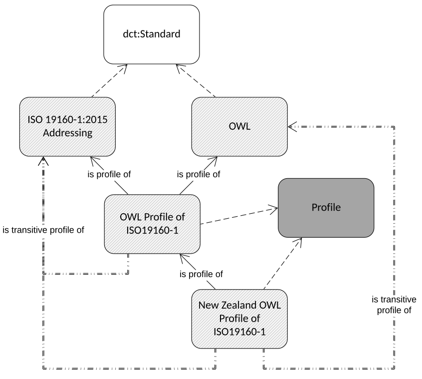
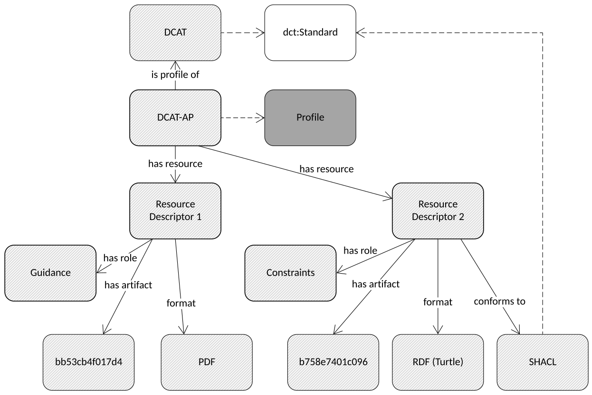
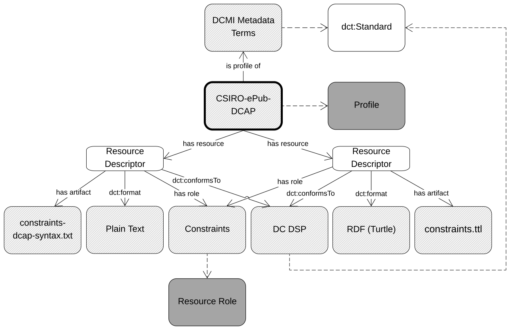
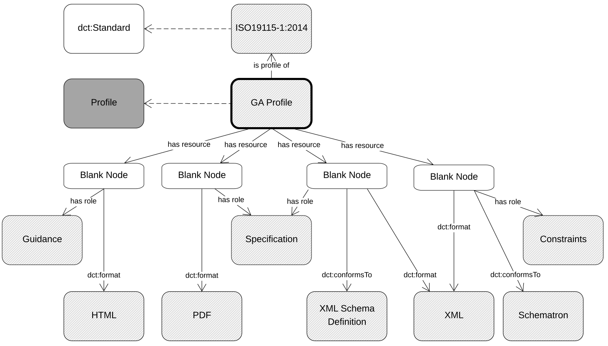
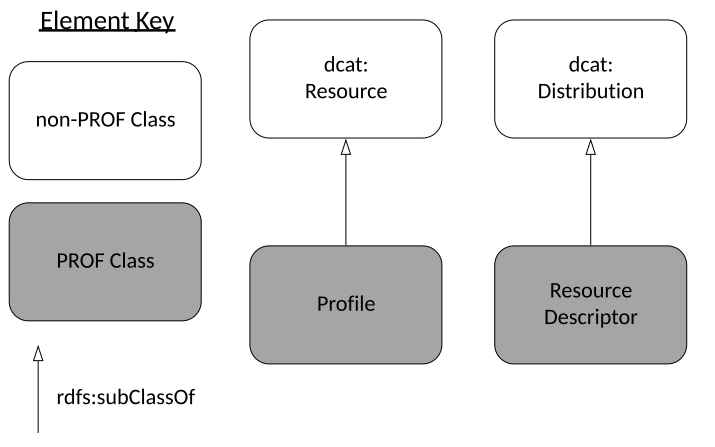
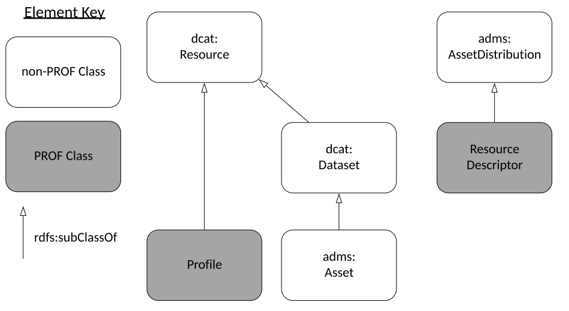
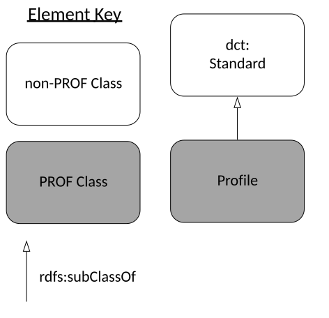
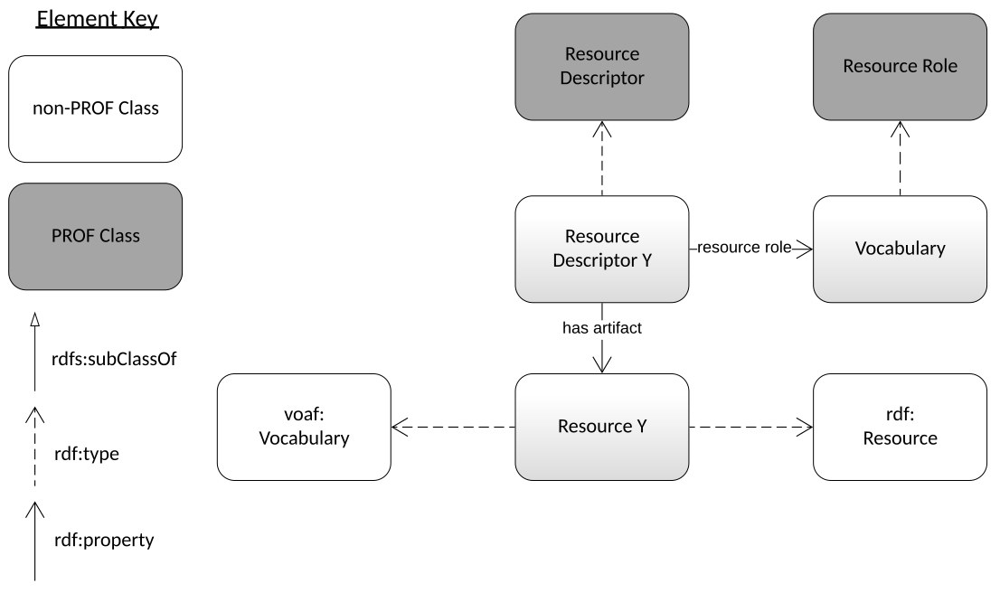

The Profiles Vocabulary is an RDF vocabulary created to allows the machine-readable description of profiles of
specifications for information resources. It can be used to describe profile hierarchies wherein profiles of
specifications may themselves have profiles indicated. It can also link multiple resources that make up a profile
- guidelines, validation tools, schemas, term lists and so on - to it and allows for those resources have formats,
roles, and digital artifacts to be described.
The namespace for PROF terms is http://www.w3.org/ns/dx/prof/.
The PROF vocabulary, defined in OWL and encoded in RDF Turtle, is available at profilesont.ttl.
This Second Public Working Draft addresses many, but not all, of the comments received on the
First Public Working Draft of this vocabulary that
was released in December, 2018. There are also some key issues still being discussed within the working group, such
as what it means to be a profile of something, the relationships between profiles, and how and whether inheritance
is included in the specification. See for more change details and the GitHub issues below
for further information on outstanding issues.
Overview of DXWG documents on profiles
This document is one from set of documents on profiles, edited by the W3C Dataset Exchange Working Group (DXWG) and the Internet Engineering Taskforce (IETF). The documents are:
[PROF] this document, an RDF vocabulary that describes profiles and related resources
[PROF-CONNEG] specific guidance on how to negotiate for Internet resource content using profiles
[[PROF-IETF]] - Indicating and Negotiating Profiles in HTTP: an IETFInternet-Draft defining HTTP Headers for HTTP content negotiation by profile
The DXWG also plans to provide [[PROF-GUIDANCE]] - Profile Guidance: general recommendations and guidance on profiling.
Introduction
This Profiles Vocabulary (PROF) provides a standardized, structured and human- & machine-readable set of terms
to describe profiles. Its development was triggered by the appearance of multiple profiles of the Dataset Catalog
Vocabulary (DCAT) [[VOCAB-DCAT]] and examples of profile description and implementation guidance systems such as
the Guidelines for Dublin Core Application Profiles [[DCAP]] and the OpenGeospatial Consortium's Standard for
Modular specifications [[MODSPEC]].
Profiles aim to increase interoperability within a community of users by introducing constraints, extensions or
combinations on the use of more general specifications. PROF is an RDF vocabulary created
to describe relations between specifications and profiles and the resources that define and implement
profiles. A specification is "A basis for comparison; a reference point against which other things
can be evaluated." (see the definition below) and a A profile, such as a profile or perhaps an
application profile, is defined as "A [data/application] specification that constrains, extends, combines,
or provides guidance or explanation about the usage of other [data/application] specifications". Profile resources
may be human-readable documents (PDFs, textual documents), vocabularies, schemas or ontologies (XSD, RDF),
constraint language resources used by specific validation tools (SHACL, ShEx, Schematron), or any other files or
resources that support the profile. In this specification, each resource is defined as having a role that defines
its function within the profile.
This vocabulary's ontological basis for specification/profile relations is a specialization of the
dct:Standard
class which is defined here as a prof:Profile. A prof:Profile
is related to either dct:Standard or prof:Profile instances by being a profile of
it, formally, prof:isProfileOf. Resources that conform to either a
dct:Standard or a prof:Profile are formally described as doing so with the use of the
dct:conformsTo
predicate.
In recognition of the existence of specifications and profiles that are made up of multiple resources –
perhaps PDF documents, machine-readable constraint language files, code lists etc. – this vocabulary also
provides for the description of the parts that constitute a profile or a specification. It defines a
prof:ResourceDescriptor class which is used to qualify the
relationship between a profile and its part resources. A prof:Profile may have any number of
prof:hasResource predicates indicating prof:ResourceDescriptor
instances which then indicates the location (a URI) of the actual resource artifact with a
prof:hasArtifact predicate and then may describes the artifact's
format &and any specifications it conforms to with dct:format &
dct:conformsTo predicates respectively. The role that the resource
plays with respect to the profile may be indicating using a prof:ResourceRole
class instance linked to it with the prof:hasRole predicate.
A vocabulary of prof:ResourceRole instances is provided in .
For the purpose of compliance, the normative sections of this document are:
Conceptual Model,
Vocabulary Specification &
Test Suite.
Notational Conventions
The keywords may, must, must not, optional, shall,
shall not, should, should not, recommended, required,
in this document are to be interpreted as described in [[RFC2119]].
Definitions
specification
A basis for comparison; a reference point against which other things can be evaluated.
Source: DCMI Metadata Terms [[DCTERMS]]'s definition for a Standard.
data specification
A specification, with human- and/or machine-processable representations, that defines the content and structure of data used in a given context.
profile
A specification that constrains, extends, combines, or provides guidance or explanation about the usage of other specifications.
This definition includes "data profiles" what are sometimes called "application profiles", "metadata application profiles", or "metadata profiles". In this document, these variants are all referred to as just "profiles".
resource
The entity that is identified by a URI. Familiar examples include an electronic document, an image, a source of information with a consistent purpose. [[RFC3986]]
metadata
Information that is supplied about a resource. [[RFC3986]]
token
A short name identifying something.
In the context of this specification, it is a profile that is usually identified by a token.
Namespaces
The namespace for PROF is http://www.w3.org/ns/dx/prof/.
However, it should be noted that PROF makes use of terms from other vocabularies, in particular Dublin Core [[!DCTERMS]].
PROF itself only defines a minimal set of classes and properties of its own.
PROF also makes use of derivative namespaces of it's namespace for auxiliary vocabulary elements, such as instances
of the prof:Role which are within the http://www.w3.org/ns/dx/prof/role/ namespace.
A full set of namespaces and prefixes used in this specification is given in the table below.
All other namespace prefixes are used in examples only.
In particular, IRIs starting with "http://example.org" represent some application-dependent IRI [[RFC3987]]
Motivation
Until this vocabulary's creation, there was no formal W3C method for describing the objects (Internet resources)
used for profiles.
There are a multitude of ways to describe the components needed to define a profile and support validation of data
to profiles, such as:
machine readable constraint languages (e.g. the abstract (Dublin Core's Description Set Profiles [[DCDSP]]) or
the more concrete (SHACL [[SHACL]] & ShEx [[SHEX]]).
Describing the components within a profile via documents or constraint languages does not indicate many things
either important or interesting to know about a profile such as:
its dependence on standards or other profiles
inheritance of profile information from the things being profiled, or
related profile resources
guidance documents in addition to formal constraints
equivalent constraints written in different constraint languages for different forms of resource, e.g. SHACL
for RDF and Schematron [[SCHEMATRON]] for XML.
With a mechanism to relate profiles to specifications and other profiles, profile hierarchies can be established
which will:
assist with the reuse of existing profiles
one can profile another profile, adding a small set of additional constraints and declaring compatibility
with all profiled specifications.
reducing the total effort and information necessary to specify a profile
allow for machine interpretation of profiles and automated profile negotiation with fallback options
if a client requests a profile which a server cannot deliver, a server may be able to instead deliver a more
generic version of the requested resource, using a profile link to the thing it profiles
a client may be able to generate a request that already indicates acceptable fallback options for resources
when the primary requested profile is unavailable
Motivating Requirements
For the purposes of dataset exchange and with the lack of a formal W3C method for describing the objects related
to profiles, the DXWG undertook a process of Use Case and Requirements gathering. They established the
Dataset Exchange Use Case and Requirements document
(the UCR document) [[DCAT-UCR]] which groups requirements for profiles into the following sections:
PROF addresses many of those Requirements – those that can be addressed by describing
profile components and relations – and those Requirements link back to the Use
Cases that motivated them.
The UCR document lists a further profiles Requirements section:
6.14 Profile and content negotiation
however those are not addressed here but by the related [[PROF-CONNEG]] document.
Related Work
Conceptual Model
OWL [[OWL2-OVERVIEW]] overview diagram of this vocabulary
This vocabulary is for describing relationships between standards/specifications, profiles of them and supporting artifacts such as validating resources.
The model takes the dct:Standard Class as a starting point and defines a specialization, a Profile, which is a dct:Standard that profiles a dct:Standard or another Profile. Standardss or Profiles can have Resource Descriptors associated with
them that define rules for implementation, provide guidance on how to implement, or play some other role. Resource Descriptors must indicate the role they
play (to guide, to validate etc.), the formalism they adhere to (dct:format)
and any dct:Standard that they themselves conform to (dct:conformsTo).
Any rdfs:Resource MAY indicate conformance to a profile as per
by using dct:conformsTo. Individual communities MAY determine what constitutes an appropriate URI to
identify a profile.
The remainder of this section is informative.
Initial Examples
The example below illustrates the use of most parts of PROF and indicates how non-PROF profile metadata is stored alongside PROF metadata.
A full example profile described using common metadata and the Profiles Vocabulary
@prefix dct: <http://purl.org/dc/terms/> .
@prefix prof: <http://www.w3.org/ns/dx/prof/> .
@prefix role: <http://www.w3.org/ns/dx/prof/role/> .
@prefix rdfs: <http://www.w3.org/2000/01/rdf-schema#> .
<http://example.org/profile/x> # a Profile; it's identifying URI
a prof:Profile ;
# common metadata for the Profile
# the Profile's label
rdfs:label "Profile X" ;
# regular metadata, a basic description of the Profile
rdfs:comment """This is a Profile of Dublin Core Terms used to describe items in
CSIRO's publications catalogue."""@en ;
# regular metadata, URI of publisher
dct:publisher <http://catalogue.linked.data.gov.au/org/O-000886> ;
# PROF metadata
# this is a profile of Dublin Core Terms, referenced by its namespace
prof:isProfileOf <http://purl.org/dc/terms/> ;
# this profile has a SHACL resource that constrains it's use of Dublin Core
prof:hasResource [
a prof:ResourceDescriptor ;
# it's in Turtle format
dct:format <https://w3id.org/mediatype/text/turtle> ;
# it conforms to SHACL, here refered to by its namespace URI as a Profile
dct:conformsTo <https://www.w3.org/TR/shacl/> ;
# this resource plays the role of "Validation"
# described in this ontology's accompanying Roles vocabulary
prof:hasRole role:Validation ;
# this resource's actual file
prof:hasArtifact <http://example.org/profile/x/resource/validator.ttl>
] ;
# other resources this profile contains
prof:hasResource ... ;
# a short code to refer to the Profile with when a URI can't be used
prof:hasToken "profx"
.
The following example demonstrates how resources can indicate conformance to a profile. Note that in
, there is also an example of this pattern whereby the ResourceDescriptor
is indicated as conforming to the [[SHACL]] specification, which is also understood to be a profile to which
things may conform.
# Profile X
<http://example.org/profile/x> a prof:Profile ;
dct:title "Profile X" .
# A resource indicating conformance to Profile X.
# In this example it's a DCAT Dataset's Distribution
<http://example.org/dataset/001>
a dcat:Dataset ;
dcat:distribution :dataset-001-x .
:dataset-001-x
a dcat:Distribution ;
dct:title "Distribution of imaginary dataset 001 that conforms to Profile X" ;
dcat:downloadURL <http://www.example.org/files/001.x> ;
dct:conformsTo <http://example.org/profile/x> .
Roles Vocabulary
A starting point vocabulary of Resource Role instances that is expected to be extended by
implementers of PROF to suite specialised needs is provided within this vocabulary in
Section 8.
Vocabulary Specification
RDF representation
The PROF vocabulary is available in RDF. Alongside the primary artifact, there is
a set of other RDF files that provide additional information, including:
alignments to other vocabularies, some of which are normative, and others which are for guidance only
additional axioms, which can be useful in some contexts
validating graphs using [[SHACL]]
These other artifacts are linked to throughout this document.
Dependencies
This vocabulary makes use of [[DCTERMS]] properties conformsTo & format in its
normative specification.
A named set of constraints on one or more identified base specifications or other profiles, including the
identification of any implementing subclasses of datatypes, semantic interpretations, vocabularies, options
and parameters of those base specifications necessary to accomplish a particular function.
This definition includes what are sometimes called "application profiles", "metadata application profiles",
or "metadata profiles".
The Profile class "may be used to model aspects of data structure and content (as per profile) or any other declared behaviour where a base specification can be identified and further requirements asserted.
A Profile may define constraints on the usage of one or more specifications. All constraints of these specifications are inherited, in the sense that an object conforming to a profile conforms to all the constraints specified the targets of prof:isProfileOf relations. This property is optional, allowing any specification to be declared at the root of a profile hierarchy using the Profile class
This is a convenience predicate that may be used to declare all specifications (including profiles) that the subject profile requires an information resource to conform to. This avoids forcing clients to traverse a profile hierarchy to find all conformance implications and available resources. If present all such relationships should be present so a client can safely avoid hierarchy traversal
The property prof:isTransitiveProfileOf defined here performs a role
similar to that of the property skos:broaderTransitive
defined in [[SKOS-REFERENCE]]. That property "...allows communities of practice to exploit transitive
interpretations of hierarchical networks..." while freeing the simpler hierarchy property of
skos:broader from having to enforce
transitivity which would prevent broader but non-transitive relationships.
Figure 4.5.2 from [[SKOS-PRIMER]], reproduced below, illustrates the general principle of use of
skos:broaderTransitive.
Inferring a transitive hierarchy from asserted skos:broader statements. Dotted arrows represent statements
inferred from the SKOS data model. Solid arrows represent asserted statements. Reproduction of Figure 4.5.2
in [[SKOS-PRIMER]]
This vocabulary defines prof:isTransitiveProfileOf to allow for the
transitive interpretations of hierarchies of Profiles (of other Profiles and Standards) while freeing the
simpler property, prof:isProfileOf from having to enforce transitivity.
While this vocabulary provides this prof:isProfileOf & prof:isTransitiveProfileOf
pair of properties, it does not specify how a particular implementation of a Profile that is related to another
Profile or Standard by prof:isTransitiveProfileOf should implement specific inferences.
Inference based on prof:isTransitiveProfileOf will be more complex than inference based on
skos:broaderTransitive due to Profiles being complex objects relative to SKOS Concepts.

Property isTransitiveProfileOf in use. See the full explanation in the example text below.
# A profile that is within a hierarchy of profiles may wish to indicate it profiles
# things "further up the chain". To do this, prof:isTransitiveProfileOf can be used
# to indicate anything the profile is related to by a series of one or more
# prof:isProfileOf properties.
# Here the New Zealand profile of the ISO addressing standard is presented in a chain
# of profiles:
@prefix dct: <http://purl.org/dc/terms/> .
@prefix prof: <http://www.w3.org/ns/dx/prof/> .
@prefix role: <http://www.w3.org/ns/dx/prof/role/> .
@prefix rdfs: <http://www.w3.org/2000/01/rdf-schema#> .
<http://linked.data.gov.au/def/iso19160-1-address-nz-profile>
a prof:Profile ;
rdfs:label "New Zealand Profile of ISO19160-1" ;
rdfs:comment """This is a country-specific profile of the international
addressing standard, ISO19160-1:2015 (Address)""" ;
prof:isProfileOf <http://linked.data.gov.au/def/iso19160-1-address> .
# The ISO thing that the NZ Profile profiles is actually a Web Ontology Language
# (OWL) version of the original ISO addressing standard
<http://linked.data.gov.au/def/iso19160-1-address>
a prof:Profile ;
rdfs:label "OWL Profile of ISO19160-1" ;
rdfs:comment """This profile profiles both ISO19160-1 (Addressing) and also
the Web Ontology Language (OWL)""" ;
prof:isProfileOf <https://www.iso.org/standard/61710.html> ,
<http://www.w3.org/2002/07/owl#> .
<https://www.iso.org/standard/61710.html>
a dct:Standard ;
rdfs:label "ISO 19160-1:2015 Addressing -- Part 1: Conceptual model" .
# Now, according to the semantics of prof:isTransitiveProfileOf, using the
# prof:isProfileOf statements above, one can infer the following additional
# statements:
<http://linked.data.gov.au/def/iso19160-1-address-nz-profile>
prof:isTransitiveProfileOf <http://linked.data.gov.au/def/iso19160-1-address> ,
<https://www.iso.org/standard/61710.html> ,
<http://www.w3.org/2002/07/owl#> .
# These statements may help consumers understand which broad, well-known
# profiles data they have conforms to when they are presented only with its
# conformance to most specialised (lowest) profile in a hierarchy which they
# may not understand.
# In this example too, a user of the profile
# <http://linked.data.gov.au/def/iso19160-1-address-nz-profile> will also
# understand that data conforming to it is also conformant with OWL which is not
# in the direct hierarchy of addressing standards (iso19160-1-address-nz-profile >
# iso19160-1-address > ISO 19160-1:2015) but is critical to know about when using
# the specialised standard as it can indicate reasoning possibilities.
A simple lexical form of identifier that may be accepted in some circumstances, such as API arguments to reference this profile. This is a “preferred term”, since alternative identifiers may be declared and used by any implementation
A resource that defines an aspect - a particular part or feature - of a Profile
Usage note:
Used to indicate the formalism (via dct:format) and any adherence to a dct:Standard (via dct:conformsTo) to allow for machine mediation as well as its purpose via relation to a ResourceRole (via hasRole)
A set of common roles are defined by the Profiles Vocabulary. These are not exhaustive or disjoint, and may be extended for situations where finer grained description of purpose is necessary. A resource may perform multiple roles
This property indicates a Resource Descriptor described by this Profile’s base specification that is to be considered a Resource Descriptor for this Profile also
This property is created for the convenience of clients. When profile describers wish to allow clients to discover all resources relevant to a Profile without having to navigating an inheritance hierarchy of prof:profileOf relations, this predicate may be used to directly associate inherited Profile Descriptors with the Profile. If this property is present, it should be used consistently and all relevant resources a client may need to utilise the profile should be present and described using this predicate
To illustrate the use of prof:isInheritedFrom, the following example is given in both pictorial
and code forms.
Property isInheritedFrom in use. Here the prof:ResourceDescriptor instance Profile Y, Resource Descriptor 2 refers to the same artifact (a constraints file) as Standard X, Resource Descriptor 1 and it is inherited by Profile Y from Standard X which Profile Y is a profile of.
# If Standard X, described using PROF, is given as having a Resource
# Descriptor, RD_1, with role "Full Constraints" as follows:
@prefix ex1: <http://example.org/profile1/> .
@prefix ex2: <http://example.org/profile2/> .
@prefix dct: <http://purl.org/dc/terms/> .Property isInheritedFrom in use.
@prefix prof: <http://www.w3.org/ns/dx/prof/> .
@prefix role: <http://www.w3.org/ns/dx/prof/role/> .
ex1:Standard_X
a dct:Standard ;
dct:title "Standard X" ;
prof:hasResource ex1:RD_1 .
ex1:RD_1
a prof:ResourceDescriptor ;
dct:conformsTo <http://www.w3.org/ns/shacl#> ; # the SHACL standard
dct:format <https://w3id.org/mediatype/text/turtle> ; # the RDF Turtle format
prof:hasRole role:fullConstraints ; # this ResourceDescriptor is the total set of
# constraints needed for validating data
# against Standard X for conformance
prof:hasArtifact ex1:constraints.ttl .
# then, a profile of Standard X, perhaps Profile Y, may use
# prof:isInheritedFrom to re-use that Resource Descriptor RD_1
ex2:Profile_Y
a prof:Profile ;
dct:title "Profile Y" ;
prof:isProfileOf ex1:Standard_X ; # this is a profile of Standard X
prof:hasResource [
a prof:ResourceDescriptor ; # Resource Descriptor 2 in diagram
prof:isInheritedFrom ex1:Standard_X ; # this Resource Descriptor is inherited from
# Standard X
dct:conformsTo <http://www.w3.org/ns/shacl#> ; # as above
dct:format <https://w3id.org/mediatype/text/turtle> ; # as above
prof:hasRole role:partConstraints ; # this ResourceDescriptor is now only Part Constraints
# for Profile Y as it's implementing some of its own,
# additional constraints (see next Resource Descriptor)
prof:hasArtifact ex1:constraints.ttl # direct URI reference to ex1:RD_1's artifact
] ,
[
a prof:ResourceDescriptor ; # Resource Descriptor 2 in diagram. This is not inherited from anywhere
dct:conformsTo <http://www.w3.org/ns/shacl#> ;
dct:format <https://w3id.org/mediatype/text/turtle> ;
# these constraints are Profile Y's on top of Standard X's
prof:hasRole role:extensionConstraints ; # Extension Constraints are those on top of
# another base specification's
prof:hasArtifact ex2:extension_constraints.ttl # a file within this Profile
] .
Specific terms must come from a vocabulary. Such a vocabulary is provided in but other terms may also be used
Resource Role Instances
Here are a small set of Resource Role Instances developed during the creation of this vocabulary. Application may
choose to extend this list as required with new and specialised Resource Role instances for their purposes.
These instances are both owl:NamedIndividuals and skos:Concepts and have basic SKOS
[[SKOS-REFERENCE]] properties.
Documents, in human-readable form, how to use the profile
Usage Note:
Many existing profiles treat their human-readable forms (PDF documents etc.) as authoritative. This role is suggestive of non-authoritativeness. For a role for a human-readable resource that is authoritative, see Specification.
This section contains a few examples of PROF in use to demonstrate aspects of this vocabulary. While
efforts have been made to ensure they are accurate at the time of this document's publication, they are not to be
considered authoritative; their purpose is only to illustrate this vocabulary's use.
DCAT-AP
This example showcases this vocabulary's description of parts of an existing, well-known, profile.
DCAT-AP is the widely used European Application Profile of DCAT. DCAT-AP is described in document form
(PDF & DOCX) and a constraints resource for instance validation is available, formulated using the W3C's Shapes
Constraints Language constraints language [[SHACL]]. An image of the DCAT-AP model is also provided.
The figure uses elements from this vocabulary to describe part of the DCAT-AP Profile graphically - PDF & RDF
resources only - to simplify the example.

Part of the DCAT-AP Profile described using this ontology. Here two two Resource Descriptors are shown relating
to the Profile indicating resources with "Guidance" and "Constraints" roles.
In words this vocabulary's descriptions of DCAT-AP is:
In RDF (turtle format), DCAT-AP is described using the Profiles Vocabulary, with many properties not listed in the
summary figure and description above as:
@prefix dc: <http://purl.org/dc/elements/1.1/> .
@prefix prof: <http://www.w3.org/ns/dx/prof/> .
@prefix role: <http://www.w3.org/ns/dx/prof/role/> .
@prefix rdfs: <http://www.w3.org/2000/01/rdf-schema#> .
<https://joinup.ec.europa.eu/release/dcat-ap-v11>
a prof:Profile ;
prof:hasToken "dcat-ap" ;
rdfs:label "DCAT-AP" ;
rdfs:comment "DCAT Application Profile for data portals in Europe" ;
dc:publisher "European Union" ;
prof:isProfileOf <http://www.w3.org/ns/dcat> ;
# SHACL constraints for the profile, guidance doc in Word & PDF & an image of the profile components
prof:hasResource
# Guidance doc in Word (DOCX)
<https://joinup.ec.europa.eu/rdf_entity/http_e_f_fdata_ceuropa_ceu_fw21_f6f27f059_bf785_b4d7d_bb602_b6448aab73bd5> ,
# Guidance doc in PDF
<https://joinup.ec.europa.eu/rdf_entity/http_e_f_fdata_ceuropa_ceu_fw21_f17e18570_b1d77_b4171_b9df5_bb53cb4f017d4> ,
# profile image (PNG)
<https://joinup.ec.europa.eu/rdf_entity/http_e_f_fdata_ceuropa_ceu_fw21_f1131a208_b92e9_b4427_ba40c_b6c47746cd422> ,
# Constraints in SHACL
<https://joinup.ec.europa.eu/rdf_entity/http_e_f_fdata_ceuropa_ceu_fw21_f016d88c3_ba0b3_b4506_bae4e_b758e7401c096> ;
.
# The DCAT-AP profile itself has profiles: here GeoDCAT-AP v1.0 is given
<https://joinup.ec.europa.eu/release/geodcat-ap-v10>
a prof:Profile ;
rdfs:label "GeoDCAT-AP" ;
prof:isProfileOf <https://joinup.ec.europa.eu/release/dcat-ap-v11> ;
<https://joinup.ec.europa.eu/rdf_entity/http_e_f_fdata_ceuropa_ceu_fw21_f6f27f059_bf785_b4d7d_bb602_b6448aab73bd5>
a prof:ResourceDescriptor;
rdfs:label "DCAT-AP Guidance Document (Word)" ;
dct:format <https://w3id.org/mediatype/application/msword> ;
prof:hasRole role:Guidance ;
.
<https://joinup.ec.europa.eu/rdf_entity/http_e_f_fdata_ceuropa_ceu_fw21_f17e18570_b1d77_b4171_b9df5_bb53cb4f017d4>
a prof:ResourceDescriptor;
rdfs:label "DCAT-AP Guidance Document (PDF)" ;
dct:format <https://w3id.org/mediatype/application/pdf> ;
prof:hasRole role:Guidance ;
.
<https://joinup.ec.europa.eu/rdf_entity/http_e_f_fdata_ceuropa_ceu_fw21_f1131a208_b92e9_b4427_ba40c_b6c47746cd422>
a prof:ResourceDescriptor;
rdfs:label "DCAT-AP Image" ;
dct:format <https://w3id.org/mediatype/image/png> ;
prof:hasRole role:Guidance ;
.
<https://joinup.ec.europa.eu/rdf_entity/http_e_f_fdata_ceuropa_ceu_fw21_f016d88c3_ba0b3_b4506_bae4e_b758e7401c096>
a prof:ResourceDescriptor;
rdfs:label "DCAT-AP Constraints" ;
dct:conformsTo <http://www.w3.org/ns/shacl>; # the namespace for SHACL
dct:format "text/turtle" ;
prof:hasRole role:FullConstraints ;
.
DCAT-AP hierarchy
This example showcases this vocabulary being used to indicated profiles within a complex hierarchy.
DCAT-AP, a profile of DCAT, has itself been profiled for various European countries, such as Belgium who has
issued DCAT-BE. Additionally, there are several domain profiles of DCAT-AP, such as
[[GeoDCAT-AP]] - for describing geospatial datasets,
dataset series and services - and [[StatDCAT-AP]]
for enhancing interoperability between descriptions of statistical datasets. Further to this, there is even an
Italian profile of GeoDCAT-AP, GeoDCAT-AP_IT.
This profile hierarchy is represented graphically in the figure and RDF (turtle) below.
DCAT-AP and related profiles in a hierarchy. The Profile labelled '?' shows a potential future profile instance
that profiles both DCAT-BE & StatDCAT-AP.
@prefix prof: <http://www.w3.org/ns/dx/prof/> .
@prefix rdfs: <http://www.w3.org/2000/01/rdf-schema#> .
<http://www.w3.org/ns/dcat>
a dct:Standard ;
<https://joinup.ec.europa.eu/release/dcat-ap-v11>
a prof:Profile ;
rdfs:label "DCAT-AP" ;
prof:isProfileOf <http://www.w3.org/ns/dcat> ;
<http://dcat.be>
a prof:Profile ;
rdfs:label "DCAT-BE" ;
prof:isProfileOf <https://joinup.ec.europa.eu/release/dcat-ap-v11> ;
<https://joinup.ec.europa.eu/release/geodcat-ap-v10>
a prof:Profile ;
rdfs:label "GeoDCAT-AP" ;
prof:isProfileOf <https://joinup.ec.europa.eu/release/dcat-ap-v11> ;
<https://joinup.ec.europa.eu/solution/statdcat-application-profile-data-portals-europ>
a prof:Profile ;
rdfs:label "StatDCAT-AP" ;
prof:isProfileOf <https://joinup.ec.europa.eu/release/dcat-ap-v11> ;
<https://joinup.ec.europa.eu/news/geodcat-apit1>
a prof:Profile ;
rdfs:label "GeoDCAT-AP_IT" ;
prof:isProfileOf <https://joinup.ec.europa.eu/release/geodcat-ap-v10> ;
# an example as per the Figure above, not an existing profile
<http://example.org/profile/questionmark>
a prof:Profile ;
rdfs:label "?" ;
prof:isProfileOf
<https://joinup.ec.europa.eu/solution/statdcat-application-profile-data-portals-europ> ,
<http://dcat.be> .
Since there are no cardinality restrictions on either the property prof:isProfileOf or other restrictions on the class definition of
prof:Profile that prevent them from being used to represent polyhierarchies, Belgium could release a
profile of [[StatDCAT-AP]] (e.g., StatDCAT-BE), that would be both a profile of DCAT-BE and [[StatDCAT-AP]]. This
imagined profile, '?' in the figure above, would not be a profile of GeoDCAT-AP.
CSIRO Dummy Dublin Core AP
This example uses a dummy profile created for this document to show how PROF describes profiles created
according to the Guidelines for Dublin Core Application Profiles [[DCAP]].
The DCAP Guidelines document "explains the key components of a Dublin Core Application Profile and walks through
the process of developing a profile". It "does not address the creation of machine-readable implementations of an
application profile" which is what PROF does.
In this example, a dummy profile of Dublin Core TERMS [[DCTERMS]] is created to characterise documents in a
hypothetical "ePublish" platform. The dummy profile contains many parts:
a profile overview document
a How To document offering guidance on how to use the profile
two constraint language files - both conforming to DCAP's constraint syntax in plain text and RDF (turtle) formats
two profile description files - one an image (the below) and the other an RDF file (the example RDF below)

CSIRO Dummy DCAP Profile characterised using PROF. Only two of the four Resource Descriptors in the RDF below are shown.
#
# This document is a description, according to the Profiles Vocabulary (see https://www.w3.org/TR/dx-prof/)
# of a dummy "CSIRO ePublish Repository" profile of the Dubline Core standard. This profile is known as a DCAP -
# Dublin Core Application Profile
#
# See http://dublincore.org/documents/profile-guidelines/ for more information about Dublin Core Application Profiles
#
@prefix dct: <http://purl.org/dc/terms/> .
@prefix xsd: <http://www.w3.org/2001/XMLSchema#> .
@prefix prof: <http://www.w3.org/ns/dx/prof/> .
@prefix rdfs: <http://www.w3.org/2000/01/rdf-schema#> .
@prefix role: <http://www.w3.org/ns/dx/prof/role/> .
# Base Specification being profiled
<http://dublincore.org/documents/2012/06/14/dcmi-terms/> a dct:Standard ;
rdfs:label "DCMI Metadata Terms" .
# dummy CSIRO profile of DC for ePublish repository
# URIs not dereferencable
<http://test.linked.data.gov.au/test/def/CSIRO-ePub-DCAP>
a prof:Profile ;
rdfs:label "CSIRO's profile of DC for ePublish" ;
prof:isProfileOf <http://dublincore.org/documents/2012/06/14/dcmi-terms/> ;
prof:token "ePubDC"^^xsd:Token ;
prof:hasResource _:1 , _:2 , _:3 , _:4 .
# example's code repository home
_:1
a prof:ResourceDescriptor ;
rdfs:label "Profile Specifcation" ;
dct:format <https://w3id.org/mediatype/text/html> ;
# the official written text specifying the Profile
prof:hasRole role:Specification ;
prof:hasArtifact <http://linked.data.gov.au/def/CSIRO-ePub-DCAP/> .
# this is an RDF (turtle) version of the DSP constraints for this profile
_:2
a prof:ResourceDescriptor ;
rdfs:label "Full constraints in RDF" ;
dct:conformsTo <http://dublincore.org/documents/2008/03/31/dc-dsp/> ; # the constraints conform to the DSP spec
dct:format <https://w3id.org/mediatype/text/turtle> ; # it's in Turtle format
# this is full constraints: if your instance passes these, you're compliant with the profile
prof:hasRole role:Constraints ;
prof:hasArtifact <http://test.linked.data.gov.au/test/def/CSIRO-ePub-DCAP/constraints.ttl> .
_:3
a prof:ResourceDescriptor ;
rdfs:label "Full constraints in DSP constraint language" ;
dct:conformsTo <http://dublincore.org/documents/2008/03/31/dc-dsp/> ; # the constraints conform to the DSP spec
dct:format <https://w3id.org/mediatype/text/plain> ; # it's in plain text format
# this is full constraints: if your instance passes these, you're compliant with the profile
prof:hasRole role:Constraints ;
prof:hasArtifact <http://test.linked.data.gov.au/test/def/CSIRO-ePub-DCAP/constraints-dcap-syntax.txt> .
# this resource is a PDF file in the def about how to use the CSIRO-ePub-DCAP
_:4
a prof:ResourceDescriptor ;
rdfs:label "Guidance document" ;
dct:format <https://w3id.org/mediatype/application/pdf> ;
# general guidance info on how to use/implement this Profile
prof:hasRole role:Guidance ;
prof:hasArtifact <http://test.linked.data.gov.au/test/def/CSIRO-ePub-DCAP/HowTo.pdf> .
This DCAP example shows, among other things, that a Profile may contain multiple
Resource Descriptor individuals that perform the same Resource Role (here
Constraints) that are differentiated on other bases, here on format: plain text & RDF (turtle).
Geoscience Australia's Profile of ISO19115-1:2014
This example shows a non-RDF profile of a non-RDF standard: ISO19115-1:2014 (Geographic information) [[ISO-19115-1-2014]].
Communities commonly make profiles of the International Organization for Standardization's standard
ISO19115-1:2014 Geographic information -- Metadata -- Part 1: Fundamentals used for cataloguing spatial datasets.
Geoscience Australia, Australia's national geological survey agency, has
created a profile that constrains ISO19115-1:2014 in ways such as making optional properties in the standard
mandatory for profile conformance.
Although not initially formulated with PROF in mind, nevertheless the various parts of the GA Profile of ISO19115
can be characterised using PROF as per and the example RDF below. Note that the
persistent URIs assigned to the profile by Geoscience Australia are used within the PROF description.

The GA Profile of ISO19115 characterised using PROF.
@prefix : <http://www.w3.org/ns/dx/prof/examples/ga.ttl#> .
@prefix prof: <http://www.w3.org/ns/dx/prof/> .
@prefix roles: <http://www.w3.org/ns/dx/prof/roles/> .
@prefix rdfs: <http://www.w3.org/2000/01/rdf-schema#> .
@prefix dct: <http://purl.org/dc/terms/> .
@prefix dc: <http://purl.org/dc/elements/1.1/> .
@prefix owl: <http://www.w3.org/2002/07/owl#> .
@prefix dcat: <http://www.w3.org/ns/dcat#> .
@prefix xsd: <http://www.w3.org/2001/XMLSchema#> .
:ISO19115-1-2014
a dct:Standard ;
rdfs:label "ISO ISO19115-1:2014" ;
rdfs:comment "The international standard ISO19115-1:2014 Geographic information - Metadata" ;
dc:publisher "International Organization for Standardization" ;
dct:source <https://www.iso.org/standard/53798.html>
.
<http://pid.geoscience.gov.au/def/schema/ga/ISO19115-1-2014>
a prof:Profile ;
prof:token "iso19115-ga" ;
rdfs:label "ISO19115-1:2014 GA Profile";
rdfs:comment """Provides a means to declare, and discover implementation resources to check, implementations of geographic metadata schema conforming to GA's profile."""@en;
dct:publisher <http://pid.geoscience.gov.au/org/ga/geoscienceaustralia> ;
prof:profileOf :ISO19115-1-2014 ;
prof:hasResource :web , :spec , :schema , :constraints ;
.
:web
a prof:ResourceDescriptor ;
rdfs:label "GA Profile guidance document online" ;
prof:hasRole roles:guidance ;
dct:conformsTo :WebPage ;
dct:format <https://w3id.org/mediatypes/text/html> ;
prof:hasArtifact <http://pid.geoscience.gov.au/def/schema/ga/ISO19115-1-2014> ;
.
:spec
a prof:ResourceDescriptor ;
rdfs:label "GA Profile specification document";
prof:hasRole roles:specification ;
dct:format <https://w3id.org/mediatypes/application/pdf> ;
prof:hasArtifact <http://pid.geoscience.gov.au/dataset/ga/122551> ;
.
:schema
a prof:ResourceDescriptor ;
rdfs:label "GA Profile XML Schema";
prof:hasRole roles:specification ;
dct:conformsTo :XSDSchema ;
dct:format <https://w3id.org/mediatypes/text/xml> ;
prof:hasArtifact <http://pid.geoscience.gov.au/def/schema/ga/ISO19115-3-2016/gapm.xsd> ;
.
:constraints
a prof:ResourceDescriptor ;
rdfs:label "GA Profile Schematron" ;
prof:hasRole roles:fullConstraints ;
dct:conformsTo :Schematron ;
dct:format <https://w3id.org/mediatypes/text/xml> ;
prof:hasArtifact <http://pid.geoscience.gov.au/def/schema/ga/schematron-rules-ga.sch> ;
.
:WebPage a dct:MediaTypeOrExtent ;
rdfs:label "Web Page" ;
rdfs:comment "A document written in HyperText Markup Language designed for human reading via a web browser." ;
dct:source <https://www.w3.org/html/> ;
.
:Schematron a dct:MediaTypeOrExtent ;
rdfs:label "Schematron" ;
rdfs:comment "A language for making assertions about the presence or absence of patterns in XML documents." ;
dct:source <http://schematron.com> ;
.
Asset Description Metadata Schema
This example shows a Profile, some of whose Resource Descriptors conform to standards.
The Asset Description Metadata Schema (ADMS) [[VOCAB-ADMS]] is a profile of DCAT, used to describe semantic
assets. Both ADMS the Profile and two of its Resource Descriptors are published
according to W3C specifications for Recommendations and Working Group Notes.
@prefix : <http://www.w3.org/ns/dx/prof/examples/adms.ttl#> .
@prefix prof: <http://www.w3.org/ns/dx/prof/> .
@prefix roles: <http://www.w3.org/ns/dx/prof/roles/> .
@prefix rdfs: <http://www.w3.org/2000/01/rdf-schema#> .
@prefix dct: <http://purl.org/dc/terms/> .
@prefix owl: <http://www.w3.org/2002/07/owl#> .
#
# A series of standards defined in this examples document
#
:W3Cnote
rdf:type dct:Standard ;
rdfs:label "W3C Working Group Note Document" ;
.
:W3Crec
rdf:type dct:Standard ;
rdfs:label "W3C Recommendation Document" ;
.
#
# ADMS, described as a profile of DCAT (original)
#
:ADMS
a prof:Profile ;
rdfs:label "ADMS" ;
# this URI is for DCAT (original) as defined in the DCAT examples
prof:profileOf <http://www.w3.org/ns/dx/prof/examples/dcat.ttl#dcat2014> ;
prof:hasResource :ADMS-note ,
:ADMS-rdf ,
.
:ADMS-note
a prof:ResourceDescriptor ;
rdfs:label "ADMS specification document" ;
prof:hasRole roles:specification ;
dct:conformsTo prof:W3Cnote ;
dct:format <https://w3id.org/mediatypes/text/html> ;
prof:hasArtifact <https://www.w3.org/TR/vocab-adms/> ;
.
:ADMS-rdf
a prof:ResourceDescriptor ;
rdfs:label "ADMS RDF vocabulary" ;
prof:hasRole roles:vocabulary ;
dct:conformsTo <https://www.w3.org/TR/owl2-rdf-based-semantics/> ,
<https://www.w3.org/TR/rdf-schema/> ;
dct:format <https://w3id.org/mediatypes/text/turtle> ;
prof:hasArtifact <https://www.w3.org/ns/adms> ;
.
# additional information about DCAT (original) not present in the DCAT example
<http://www.w3.org/ns/dx/prof/examples/dcat.ttl#dcat-orig>
dct:conformsTo :W3Crec .
Test Suite
A software suite is made available to test implementations of this vocabulary for compliance. This suite comprises of
[[SHACL]] RDF graph validation templates and instructions for the application of those templates to implementations.
Implementations
Implementation conformance reports for this vocabulary are given in:
This section lists alignments between PROF and other, related, ontologies.
Dataset Catalogue Vocabulary
PROF/DCAT relations are being addressed as a major part of PROF's Third Public Working Draft
PROF is considered a specialisation of the revised version of the Dataset Catalogue Vocabulary [[VOCAB-DCAT-2]]
for the purpose of cataloguing profiles. With this in mind, the main PROF classes - Profile and
Resource Descriptor - specialise (are sub classes of) DCAT's Resource and
Distributions respectively. This alignment is not normative, but is provided as a recommended way
to consider general metadata needs when describing profiles.
These specialisations are indicated in below as well as the data element mapping
table that follows it.

Alignment of PROF with DCAT [[VOCAB-DCAT-2]].
The following table relates PROF and DCAT elements.
PROF element
Mapping property
DCAT element
Notes
prof:Profile
rdfs:subClassOf
dcat:Resource
prof:Profile is not a sub class of dcat:Dataset
prof:ResourceDescriptor
rdfs:subClassOf
dcat:Distribution
While DCAT is referenced in the main PROF RDF file, the following separate RDF file contains just the mappings
included in the table above too:
The Asset Description Metadata Schema (ADMS) [[VOCAB-ADMS]] is a profile of DCAT, used to describe semantic
assets. PROF is aligned with ADMS as per and table below.
Due to PROF being aligned with the revised version of DCAT and ADMS also being aligned with DCAT, classes and
properties of the two vocabularies may be sensibly used beyond the mappings presented here. In particular the fact
that both prof:Profile and adms:Asset are non-disjoint sub classes of
dcat:Resource, albeit that the latter is such via being a sub class of dcat:Dataset
which subclasses dcat:Resource, means that resources could easily be dually typed as being of both
prof:Profile and adms:Asset.

Alignment of PROF with DCAT [[VOCAB-ADMS]].
The following table relates PROF and ADMS elements.
PROF element
Mapping property
ADMS element
prof:ResourceDescriptor
rdfs:subClassOf
adms:AssetDistribution
The following RDF file contains just the mappings included in the table above:
PROF makes use of Dublin Core Terms [[DCTERMS]] directly with the PROF class prof:Profile being a
sub class of dct:Standard and two Dublin Core Terms properties, dct:format &
dct:conformsTo being recommended within PROF for use in describing instances of the
prof:ResourceDescriptor class.
PROF is aligned with Dublin Core Terms as per and table below.

Alignment of PROF with Dublin Core Terms [[DCTERMS]].
The following table relates PROF and Dublin Core Terms elements.
PROF element
Mapping property
DCT element
prof:Profile
rdfs:subClassOf
dct:Standard
While Dublin Core Terms is referenced in the main PROF RDF file, the following RDF file contains just the
mappings included in the table above:
The Provenance Ontology [[PROV-O]] is used to represent and interchange provenance information.
Alignment of PROF with PROV-O will be addressed in PROF's Third Public Working Draft.
Web Ontology Language
PROF is a vocabulary formulated using the Web Ontology Language (OWL) [[OWL2-OVERVIEW]]. In addition to the basic
modelling mechanics of PROF that use OWL, for example PROF classes being defined as owl:Class
objects and PROF properties being OWL owl:ObjectProperty or other OWL property types, some of the
core PROF modelling concepts relate to OWL ontology concepts.
PROF is aligned with OWL at a conceptual modelling level as per and table below.
Alignment of PROF with OWL [[OWL2-OVERVIEW]].
PROF element
Mapping property
OWL element
prof:isProfileOf
?
owl:imports
The following RDF file contains just the mappings included in the table above:
Vocabulary of a Friend (VOAF) is a vocabulary specification providing elements allowing the description of
vocabularies (RDFS vocabularies or OWL ontologies) [[VOAF]]. Due to VOAF being defined for use with RDF resources
only, PROF as an alignment with VOAF which is instance-specific: resources described by PROF's
prof:ResourceDescriptor class with the property prof:resourceRole linking to the
Resource Role role:Vocabulary or a specialized version of it may be a voaf:Vocabulary.

Alignment of PROF with VOAF [[VOAF]].
PROF element
Mapping property
VOAF element
instance of rdf:Resource
related to an instance of a prof:ResourceDescriptor via
prof:hasArtifact that also relates to the Role role:Vocabulary or specialisation
thereof
instance of voaf:Vocabulary
The following RDF file contains just the mappings included in the table above:
The Simple Knowledge Organization System (SKOS) [[SKOS-REFERENCE]] is a data model knowledge organization
systems, such as thesauri, taxonomies, classification schemes and subject heading systems. PROF declares its
instances of Resource Role to be instances of the skos:Concept class to indicate that
they should be considered a hierarchy of concepts within a skos:ConceptScheme. Since they are SKOS
hierarchy and it is recommended that implementers of PROF extend the hierarchy for their own needs, implementers
should consider creating new Resource Role (also skos:Concept) and relating them to the
existing instances with SKOS properties, particularly skos:narrower/skos:broader.
Alignment of PROF with SKOS [[SKOS-REFERENCE]].
PROF element
Mapping property
SKOS element
prof:ResourceRole
rdfs:subClassOf
skos:Concept
While SKOS is referenced in the main PROF RDF file, the following RDF file contains just the mappings included in
the table above:
The PROF vocabulary, when used with likely extensions such as [[DCTERMS]], supports the attribution of data and
metadata to various participants such as resource creators,
publishers and other parties or agents via qualified
relations and, as such, may define terms that may be related to personal information. In addition, it may also
be used with extensions that support the association of rights and
licenses with modelled Profiles and Resource Descriptors.
These rights and licenses could potentially include or reference sensitive information such as user and asset
identifiers as described in [[ODRL-VOCAB]].
Implementations that produce, maintain, publish or consume such vocabulary terms must take steps to ensure security
and privacy considerations are addressed at the application level.
A comments disposition document is in preparation and will be available from the Data Exchange Working Group home page.
Appendices
Acknowledgements
The editors gratefully acknowledge the contributions made to this document by
all members of the working group,
especially Antoine Isaac, Tom Baker, Simon Cox, Alejandra Gonzalez-Beltran, Andrea Perego.
The editors would also like to thank non-members of this working group for their comments, changes and ideas from
which have been incorporated into this document. In particular: Paul Walk, Leslie Sikos, Stephen Richard,
Kam Hay Fung, Heidi Vanparys and Irene Polikoff.
Finally, the editors also gratefully acknowledge the chairs of this Working Group: Karen Coyle and Peter
Winstanley, former chair Caroline Burle and W3C staff contacts Phil Archer and Dave Raggett.